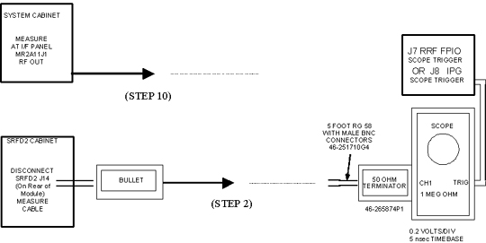
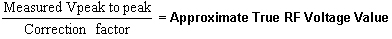

Operating Documentation
Direction 5133330-3, Rev# 14
Signa EXCITE HD 3.0T Service Methods
Module Version 1.0, Version Date 5/3/07
Operating Documentation |
A minimum RF signal level from the (U)CERD Exciter or RRF (Remote RF) Master Exciter is required or else it will be impossible to meet the specified 16kW body and 2kW head RF power output levels. Use this section to verify that the (U)CERD Exciter or RRF Master Exciter is outputting at least the minimum amount of power required to the SRFD2. See Table E-1 for needed tools and test equipment.
Table 1: ITEMS NEEDED TO CHECK (U)CERD RF SIGNAL OUTPUT
| Item | Description | Part Number |
| 1. | RF Test Cable Kit | 46-255816G1 |
| 2. | Cannon to BNC-male Test Cable (included in item 4 below) | 46-301549P6 |
| 3. | SMB-female to BNC-male Test Cable (included in item 4 below) | 46-301549P5 |
| 4. | TPS RF Connector/Adapter and Cable Test Kit (optional) | 46-301927G1 |
| 5. | RF Power Measurement Kit (recommended) | 46-317724G1 or G2 |
| 6. | 100 MHz Scope (equivalent or greater) | 46-183029P61 |
| NOTE: | Please read the following if you do not have an RF Power Measurement Kit and you are going to attempt to measure the exciter output directly with a 100 MHz oscilloscope. Be aware that, due to oscilloscope bandwidth limitations, an exciter RF voltage reading taken directly from a 50 ohm terminated 100 MHz oscilloscope input channel can be as much as 16% less than the actual exciter RF output voltage level. This error is accounted for and is not a problem when using the oscilloscope in conjunction with the RF Power Measurement Kit. Reading reasonably accurate 63.86 MHz voltage levels directly from a 100 MHz oscilloscope without using the RF Power Measurement Kit requires that the correction factor of the scope channel being used is known. This is so that the approximate true RF voltage level can be calculated. The FE can request that the 63.86 MHz correction factor for each channel be determined and reported by the metrology lab the next time the oscilloscope is returned for calibration or, if the FE has access to the 4dBm (1 Vpp) oscilloscope calibrator tool used in the RF Power Measurement Kit, he can determine this correction factor himself. SeeScopes with Less Than 300 MHZ Bandwidth for more information concerning the derivation of the correction factor. Divide the Vpp value read from the oscilloscope by the correction factor to determine the approximate true RF voltage level value. The simple formula is as follows: |

Illustration 1: RF SIGNAL MEASUREMENTS USING A 300 MHZ OR CHARACTERIZED 100 MHZ SCOPE

Connect the oscilloscope to the system hardware as per Illustration 1. Confirm that the oscilloscope is properly configured, that the channel 1 vertical Volts/div variable control is fully CCW, and that the bandwidth limit button on the oscilloscope is not selected.
Ensure that channel 1 is terminated with a 50 ohm feed-through terminator. Disconnect the cable going to J14 on the rear of the SRFD2 module and connect it to the input of the 50 ohm terminator connected to channel 1 on the scope. A short ( less than 5 ft.) length of coax and a BNC bullet (female BNC/female BNC) adapter can be connected to the cable removed from J14 to route the signal to the scope.
Prepare the system to scan.
[Manual Prescan][Scan TR]. Increase TG to 200.
If using a scope with a bandwidth of 300 MHz or greater then read the peak to peak voltage from the scope face and confirm that it is > 0.632 Vpp (0 dBm).
If using a < 300 MHz scope read the peak to peak voltage from the scope face and then, using the correction factor for the scope channel in use, calculate the approximate true RF voltage value by using the formula below. Confirm that the approximate true RF voltage value is > 0.632 Vpp (0 dBm).

Decrease TG to 0 (zero). [Done].
Reconnect the cable removed from J14 on the rear of the SRFD2.
If the measured voltage meets the specification then the Exciter is working properly. The functionality of the SRFD2 should be checked again. No need to continue this procedure.
Disconnect the cable going to J1 on the rear of the System Cabinet and connect to J1 a known good coax test cable 5 ft. in length. Route the other end of the test cable to the input of the 50 ohm feed-through terminator connected to channel 1 on the scope.
[Manual Prescan][Scan TR]. Increase TG to 200.
If using a 300 MHz bandwidth or greater scope then read the peak to peak voltage from the scope face and confirm that it is 0.893 to 1.12 Vpp (3.0 dBm to 5.0 dBm). A voltage level exceeding the 1.12 Vpp (5.0 dBm) typical upper limit is generally not a cause for concern.
If using a 100 MHz bandwidth scope read the peak to peak voltage from the scope face and then, using the correction factor for the scope channel in use, calculate the approximate true RF voltage value by using the formula in step 6 and confirm that the approximate true RF voltage value is > 0.893 Vpp (3.0 dBm).
Decrease TG to 0 (zero). [Done].
Reconnect the cable removed from J1 on the rear of the System Cabinet.
Check for poor connections in the cabling or connectors between the System Cabinet and RF Cabinet if the voltage measured at J14 is too low but the voltage at J1 on the rear of the System Cabinet meets specification.
If the system has a (U)CERD: Remove connector from J109 on the bottom, front of the (U)CERD.
Insert the cannon-to-BNC test cable from the “TPS RF Connector/Adapter and Cable Test Kit” into the top-most female plug inside the J109 connector on the (U)CERD, marked EXC RF OUT.
Connect the BNC end of the test cable to the 50 ohm feed-through connector on scope channel 1.
If the system has an RRF: Locate the Master Exciter Output J8 SMB port on the Multiplexer Board located on the rear of the RRF.
Remove the cable connected to the Master Exciter Output J8 connector and set it aside.
Insert the SMB-female to BNC-male test cable from the “TPS RF Connector/Adapter and Cable Test Kit” into the J8 Master Exciter Output connector.
Connect the BNC end of the test cable to the 50 ohm feed-through connector on scope channel 1.
[Manual Prescan][Scan TR]. Increase TG to 200.
If using a 300 MHz bandwidth or greater scope then read the peak to peak voltage from the scope face and confirm that it is 0.893 to 1.12 Vpp (3.0 dBm to 5.0 dBm). A voltage level exceeding the 1.12 Vpp (5.0 dBm) typical upper limit is generally not a cause for concern.
If using a 100 MHz bandwidth scope read the peak to peak voltage from the scope face and then, using the correction factor for the scope channel in use, calculate the approximate true RF voltage value by using the formula in step 6 and confirm that the approximate true RF voltage value is > 0.893 Vpp (3.0 dBm).
Decrease TG to 0 (zero). [Done].
If the system has a (U)CERD: Remove the cannon-to-BNC test cable from the top-most plug of J109 on the (U)CERD and reconnect the cable that was previously removed from J109.
If the system has an RRF: Remove the SMB-female to BNC-male test cable from the Master Exciter Output J8 connector on the Multiplexer Board and reconnect the cable that was previously removed.
If the system has an RRF: Trace the cable connecting to the Master Exciter Input J10 on the Multiplexer Board over to the J6 RF Out on the Master Exciter Board.
Remove the cable at J6 RF Out on the Master Exciter Board and connect the SMB-female to BNC-male test cable to this port.
Repeat steps 19 – 22 above.
Remove the SMB-female to BNC-male test cable from the J6 RF Out connector and reconnect the cable that was previously removed.
Only consider replacing the Exciter or RRF Master Exciter Boards if the output is below the specification AND the body RF output power cannot be adjusted to meet the 16 kW specification. Otherwise, check the RF cabling, connectors, or any hardware in between.
More accurate measurements are made by using the RF Power Measurement Kit and a 100 MHz oscilloscope. The kit will compensate for any amplitude error due to the bandwidth limitation associated with using a 100 MHz scope. The 1.5T Scope Calibrator provides a 63.86 MHz sine wave at 1.00 VPP (4dBm).
Illustration 2: 1.5T SCOPE CALIBRATOR CONNECTIONS

Verify that the Bandwidth Limit button is not selected on the oscilloscope.
Verify Channel 1 is set to 1 Mega ohm input termination.
| NOTE: | Use the 50 ohm terminator supplied with the RF Power Measurement Kit and set Channel 1 oscilloscope termination selection to 1Mega ohm. |
Connect the 1.5T Scope Calibrator via the 50 ohm feed-through terminator to the oscilloscope input. See Illustration 2 or the laminated card included in the RF Power Measurement Kit that is labeled, in the upper right-hand corner, CAL.
Adjust the channel 1 vertical Volts/div control until amplitude of the waveform is slightly greater than 8 divisions.
Adjust the channel 1 vertical Volts/div variable control to achieve exactly 8 divisions.
Remove 1.5T Scope Calibrator. Do not remove the 50 ohm feed-through terminator attached to the oscilloscope channel 1.
Disconnect the cable going to J14 on the rear of the SRFD2 and connect it to the input of the 50 ohm terminator connected to channel 1 on the scope. A short ( less than 5 ft.) length of coax and a BNC bullet (female BNC/female BNC) adapter can be connected to the cable removed from J14 to route the signal to the scope.
Prepare the system to scan.
[Manual Prescan][Scan TR]. Increase TG to 200.
Confirm that the output from the J14 cable is > 25.28 minor divisions.
| NOTE: | Understand that each of the 8 divisions on the scope face is composed of 5 minor divisions. Since 8 X 5= 40 total minor divisions, count the number of individual minor divisions that the RF waveform spans. Since the input signal is small, minor divisions are used in place of divisions so that a more accurate scope measurement can be made. |
Decrease TG to 0 (zero). [Done].
Reconnect the cable removed from J14 on the rear of the SRFD2.
If the measured voltage meets the specification then the Exciter is working properly. The functionality of the SRFD2 should be checked again. No need to continue this procedure.
Disconnect the cable going to J1 on the rear of the System Cabinet and connect to J1 a known good coax test cable 5 ft. in length. Route the other end of the test cable to the input of the 50 ohm feed-through terminator connected to channel 1 on the scope.
[Manual Prescan][Scan TR]. Increase TG to 200.
Read the peak to peak size of the waveform in divisions and then confirm that it is > 35.7 minor divisions.
Decrease TG to 0 (zero). [Done].
Reconnect the cable removed from J1 on the rear of the System Cabinet.
Check for poor connections in the cabling or connectors between the System Cabinet and RF Cabinet if the voltage measured at J14 is too low but the voltage at J1 on the rear of the System Cabinet meets specification.
If the system has a (U)CERD: Remove connector from J109 on the bottom, front of the (U)CERD.
Insert the cannon-to-BNC test cable from the “TPS RF Connector/Adapter and Cable Test Kit” into the top-most female plug inside the J109 connector on the (U)CERD, marked EXC RF OUT.
Connect the BNC end of the test cable to the 50 ohm feed-through connector on scope channel 1.
If the system has an RRF: Locate the Master Exciter Output J8 SMB port on the Multiplexer Board located on the rear of the RRF.
Remove the cable connected to the Master Exciter Output J8 connector and set it aside.
Insert the SMB-female to BNC-male test cable from the “TPS RF Connector/Adapter and Cable Test Kit” into the J8 Master Exciter Output connector.
Connect the BNC end of the test cable to the 50 ohm feed-through connector on scope channel 1.
[Manual Prescan][Scan TR]. Increase TG to 200.
Read the peak-to-peak size of the waveform in divisions and then confirm that it is > 35.7 minor divisions.
Decrease TG to 0 (zero). [Done].
If the system has a (U)CERD: Remove the cannon-to-BNC test cable from the top-most plug of J109 on the (U)CERD and reconnect the cable that was previously removed from J109.
If the system has an RRF: Remove the SMB-female to BNC-male test cable from the Master Exciter Output J8 connector on the Multiplexer Board and reconnect the cable that was previously removed.
If the system has an RRF: Trace the cable connecting to the Master Exciter Input J10 on the Multiplexer Board over to the J6 RF Out on the Master Exciter Board.
Remove the cable at J6 RF Out on the Master Exciter Board and connect the SMB-female to BNC-male test cable to this port.
Repeat steps 22 – 24 above.
Remove the SMB-female to BNC-male test cable from the J6 RF Out connector and reconnect the cable that was previously removed.
Only consider replacing the Exciter or RRF Master Exciter Boards if the output is below the specification AND the body RF output power cannot be adjusted to meet the 16 kW specification. Otherwise, check the RF cabling, connectors or any hardware in between.